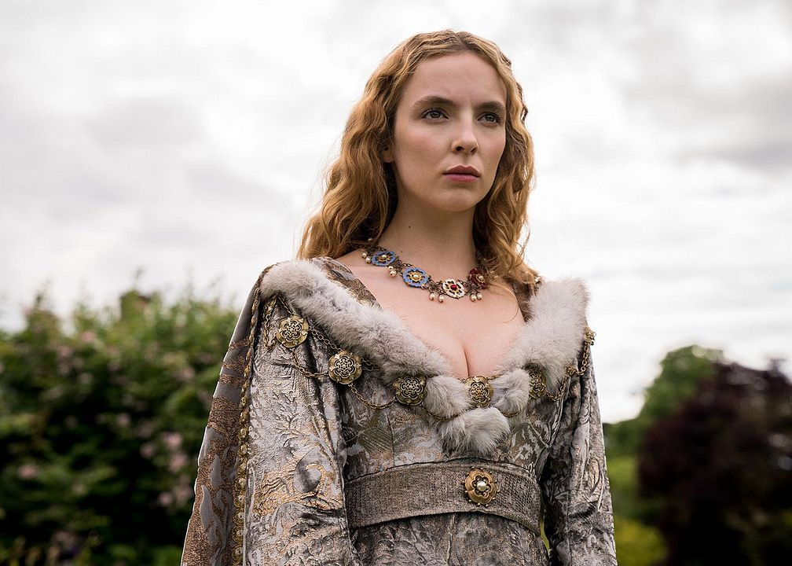
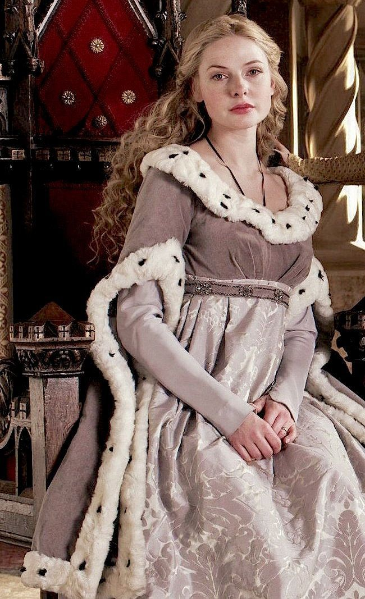

Personagens da Casa Stark
Bran Stark
Idade: 95
Ano da morte: 78 d.B
Título: Rei de Westeros
Avatar: Isaac Hempstead Wright

Feitos: - Unificou Westeros após a queda do Trono de Ferro - Reinou por 78 anos - Instituiu a sucessão eletiva - Criou o Grande Conselho Permanente
Descendência:
Não deixou herdeiros.
Sansa Stark
Idade: 102
Ano da morte: 81 d.B
Título: Rainha de Westeros
Avatar: Sophie Turner

Feitos: - Primeira soberana eleita pelo Conselho - Deu origem às linhagens Stark modernas - Responsável pela fragmentação inicial do reino
Descendência
- Eddard Stark II
- Aemon Stark
- Lyanna Stark
- Rickon Stark (falecido sem herdeiros)
Eddard Stark II
Idade: 76
Ano da morte: 114 d.B
Título: Senhor do Norte
Avatar: Travis Fimmel

Feitos: - Consolidou a autonomia do Norte - Fundador da Linhagem do Norte
Descendência
- Torrhen Stark
- Arya Stark II
Torrhen Stark
Idade: 67 (em 188 d.B)
Título: Senhor do Norte
Avatar: Joel Kinnaman
Feitos: - Governa o Norte com independência prática - Conhecido como O Lobo Cansado
Arya Stark II
Idade: 61 (em 188 d.B)
Título: Nobre do Norte
Avatar: Jodie Comer

Feitos: - Influência política indireta - Atua nos bastidores do Norte
Aemon Stark
Idade: 79
Ano da morte: 118 d.B
Título: Senhor de Harrenhal
Avatar: Ben Barnes
Feitos: - Criou a base legalista do reino - Fundador da Linhagem Central
Descendência
- Rhaena Stark
- Maekar Stark
Rhaena Stark
Idade: 64 (em 188 d.B)
Título: Senhora de Harrenhal
Avatar: Rebecca Ferguson

Feitos: - Mantém o poder burocrático central - Apoia o Conselho Regente
Maekar Stark
Idade: 59 (em 188 d.B)
Título: Comandante Regional
Avatar: Michael Fassbender

Feitos: - Controle militar local - Voz ativa entre soldados e capitães
Lyanna Stark
Idade: 74
Ano da morte: 112 d.B
Título: Senhora de Gulltown
Avatar: Rosamund Pike

Feitos: - Transformou comércio marítimo em poder político - Fundadora da Linhagem da Costa
Descendência
- Corlys Stark
- Elia Stark
Corlys Stark
Idade: 62 (em 188 d.B)
Título: Senhor de Gulltown
Avatar: Alexander Skarsgård

Feitos: - Domina comércio e frota - Figura-chave nas alianças costeiras
Elia Stark
Idade: 57 (em 188 d.B)
Título: Administradora Comercial
Avatar: Eva Green

Feitos: - Controla contratos e rotas mercantis - Ponte com comerciantes estrangeiros
NPCs Ligados às Facções Stark
Harlon Snowfall
Idade: 58
Título: Comandante do Norte
Avatar: Stephen Lang
Nota: Não pertence à Casa Stark
Feitos: Líder do Pacto do Inverno
Ser Mathis Greyquill
Idade: 61
Título: Arquivista-Chefe de Harrenhal
Avatar: Mark Rylance
Nota: Não pertence à Casa Stark Feitos: Líder da Liga do Registro ,